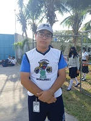

Dirección:rogerloria@cobaqroo.edu.mx
Subdirección administrativa:gustavomadera@cobaqroo.edu.mx
subdirección académica:liliariver@cobaqroo.edu.mx
Apoyo académico: marianovelo@cobaqroo.edu.mx
control escolar:iselajuarez@cobaqroo.edu.mx
Experiencias de Alumnos 2020-2023
Nayeli Montserrat Pérez Paredes
Entrando a bachilleres Cancún Dos no fue muy bueno, ya que entré en pandemia y no sentía que aprendía en las clases en línea y se me complicó bastante poder tener calificaciones aprobatorias, pero sinceramente cuando pudimos entrar en presencial, fue de mucha ayuda porque pude aprender muchas cosas con los profesores y prestar atención sin distraerme, y así pude subir mis calificaciones y así sigo, y bueno he obtenido más conocimientos de las que tuve en el principio, y también a mis profes les doy gracias que fueron de mucha ayuda en este aprendizaje como al profe Juan Manuel Ucan, Francisca Ibarra, Carolina Cob, entre otros, pero destacando a esos maestros que enseñan con mucha dedicación y no te dejan solo en el proceso, al igual a la escuela que tiene a muchos profesores bastantes buenos y poder seguir dando tantos conocimientos.
Marco Antonio Viera Abreu

Mi experiencia en el bachilleres Cancún dos ha Sido indudablemente una aventura, dónde si bien nos enseñan y nos dan la preparación necesaria para el futuro, ya sea universitaria o laboral . Pero igual tiene un ambiente social agradable para los alumnos, ya sea con las actividades de para escolares que varían desde físicas hasta artísticas como pintura o danza. Junto a los eventos que hacen siendo el más reciente el del día del amor y la amistad el 14 de febrero donde hubo venta de alimentos y el grupo sexto b (el mío) hicimos venta de chicharrones, toma de fotos y rentamos una botarga. Atesorare estos momentos por el resto de mi vida.
Diana Valentina Sulub Marmolejo
Mi experiencia en bachilleres ha sido buena, he aprendido y crecido mucho como estudiante, considero que es una escuela que te forma para tu vida estudiantil, me ha ayudado a ser más disciplinada y constante con mis tareas, no solo eso, sino que también los profesores han sido de mucha ayuda, en el aspecto de los profesores creo que son muy buenos cada uno en su materia y los enseñan de una buena manera, y están atentos a nosotros. También creo que es una escuela que exige un poco pero considero que eso es bueno ya que te ayudará más adelante para tu vida laboral. En conclusión bachilleres ha sido una buena oportunidad para mi y para desarrollar mis capacidades.
Horacio Enrique Yam Lopez
Ha sido una experiencia muy grata, ya que las instalaciones son de buen nivel y el nivel educativo es de los mejores en el estado, los conocimientos adquiridos son de gran utilidad para mi vida tanto escolar y cotidiana.